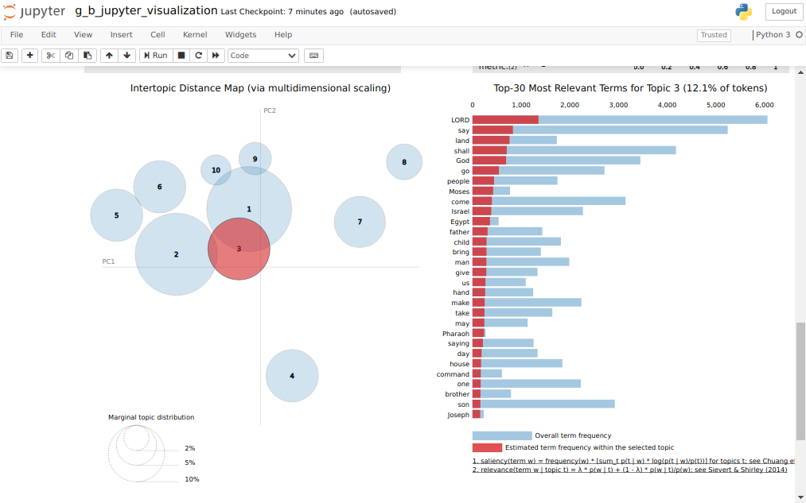
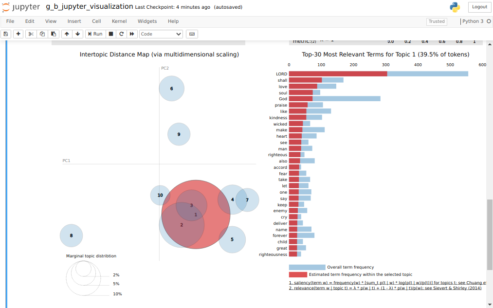

Topic Modeling
Some considerations to begin with Topic Modeling learnt from the guide articles:
- If one seeks to create a topic model that humans can interpret, then one would typically choose a low number of topics (e.g., between 10 and 50).
- If, in contrast, one seeks the topic model to serve as input for another statistical model (e.g., regression, classification, clustering) and human comprehensibility is not an important factor, the model fit (and not its interpretability) determine the most appropriate number of topics; here, the number of topics might range between 30 and 100 or even more.
The article I was following obtains the topics from the processing site they use. We will be using a local library instead (Gensim) following this article:
Topic Modelling in Python with NLTK and Gensim And the results are :
(0, '0.038*"LORD" + 0.026*"king" + 0.021*"say" + 0.018*"son"')
(1, '0.021*"one" + 0.020*"make" + 0.016*"shall" + 0.016*"gold"')
(2, '0.022*"LORD" + 0.012*"like" + 0.011*"make" + 0.009*"God"')
(3, '0.059*"shall" + 0.026*"offering" + 0.017*"one" + 0.017*"LORD"')
(4, '0.032*"son" + 0.024*"say" + 0.022*"child" + 0.019*"go"')
(5, '0.047*"LORD" + 0.023*"say" + 0.021*"Israel" + 0.013*"come"')
(6, '0.076*"shall" + 0.024*"offering" + 0.018*"LORD" + 0.015*"priest"')
(7, '0.033*"say" + 0.017*"LORD" + 0.013*"come" + 0.011*"land"')
(8, '0.042*"say" + 0.025*"Yeshua" + 0.023*"come" + 0.014*"go"')
(9, '0.033*"God" + 0.015*"man" + 0.012*"also" + 0.011*"one"')
And for another translation:
(0, '0.061*"son" + 0.033*"king" + 0.014*"father" + 0.014*"house"')
(1, '0.074*"shall" + 0.028*"LORD" + 0.023*"offering" + 0.014*"make"')
(2, '0.044*"say" + 0.027*"Yeshua" + 0.023*"come" + 0.015*"go"')
(3, '0.019*"say" + 0.013*"king" + 0.012*"God" + 0.011*"one"')
(4, '0.053*"LORD" + 0.023*"God" + 0.022*"land" + 0.014*"shall"')
(5, '0.046*"say" + 0.024*"son" + 0.022*"go" + 0.020*"come"')
(6, '0.023*"LORD" + 0.018*"say" + 0.011*"like" + 0.010*"come"')
(7, '0.038*"God" + 0.015*"Messiah" + 0.013*"Lord" + 0.013*"things"')
(8, '0.033*"king" + 0.033*"LORD" + 0.026*"Israel" + 0.024*"say"')
(9, '0.050*"child" + 0.016*"hundred" + 0.016*"tribe" + 0.015*"thousand"')
the script containing the process is g_a_lda_topics.py
On top of this we can use a neat visualization tool : pyLDAvis
And altering a Jupyter Notebook I found here, we can get an amazing interactive view of the topics (g_b_jupyter_visualization.ipynb):

and with a simple filter addition in the code:
if ( chapter['bookId'] not in ['PSA']):
continue
we can get the Topics Model Analysis for the Book of Psalms:

| Previous | Home | Next |
|---|---|---|
| Hebrew | θεόφιλος Journey | Topic Visualization |